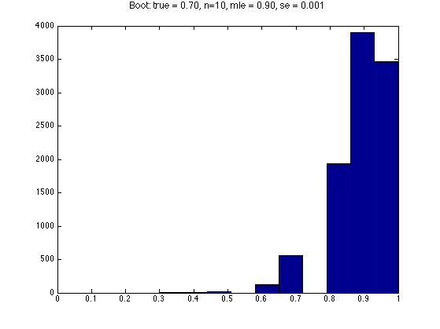
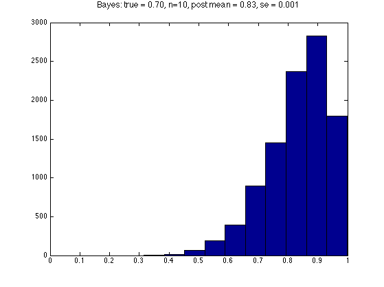
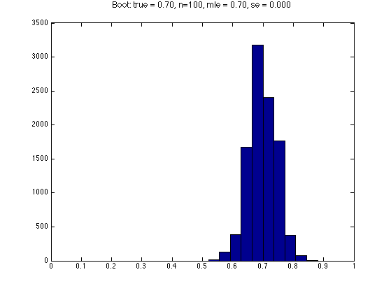
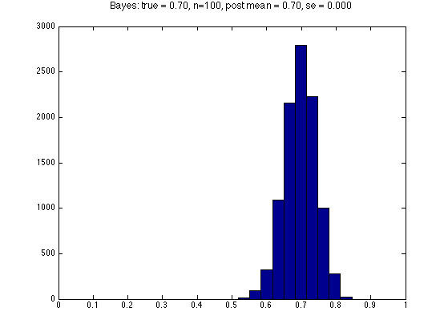

Bootstrap demo for the MLE for a Bernoulli
fs = 12;
setSeed(1);
theta = 0.7;
Ns = [10 100];
for Ni=1:length(Ns)
N = Ns(Ni);
B = 10000;
X = rand(1,N) < theta;
estimator = @(X) mean(X);
bmle = estimator(X);
mleBoot = zeros(1,B);
for b=1:B
Xb = rand(1,N) < bmle;
mleBoot(b) = estimator(Xb);
ndx = unidrndPMTK(N,1,N);
Xnonparam = X(ndx);
mleBootNP(b) = estimator(Xnonparam);
end
figure;
hist(mleBoot)
set(gca,'xlim',[0 1])
ttl = sprintf('Boot: true = %3.2f, n=%d, mle = %3.2f, se = %5.3f\n', ...
theta, N, bmle, std(mleBoot)/sqrt(B));
title(ttl, 'fontsize', fs)
printPmtkFigure(sprintf('bootstrapDemoBer%d', N));
N1 = length(find(X==1));
N0 = length(find(X==0));
alpha1 = 1; alpha0 = 1;
model.a = N1+alpha1;
model.b = N0+alpha0;
Xpost = betaSample(model, [1, B]);
figure;
hist(Xpost);
set(gca,'xlim',[0 1])
ttl = sprintf('Bayes: true = %3.2f, n=%d, post mean = %3.2f, se = %5.3f\n', ...
theta, N, mean(Xpost), std(Xpost)/sqrt(B));
title(ttl, 'fontsize', fs)
printPmtkFigure(sprintf('bootstrapDemoBerBayes%d', N));
end
   